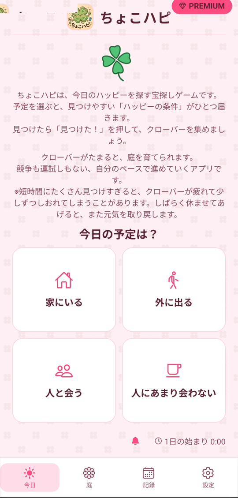
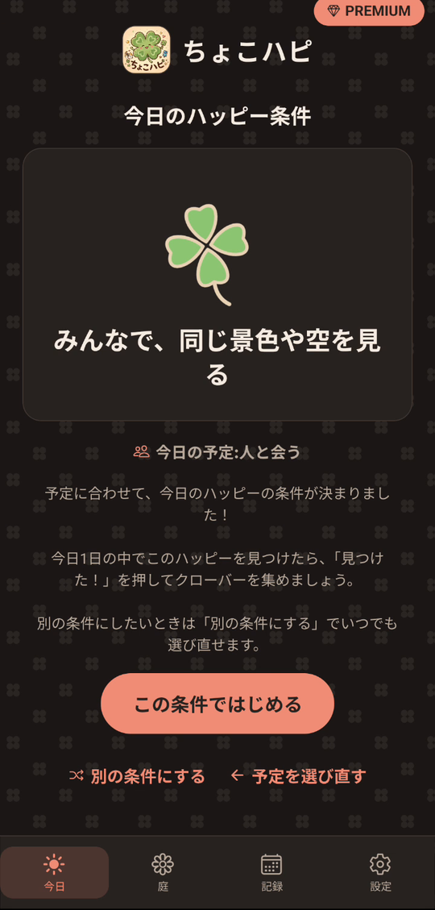
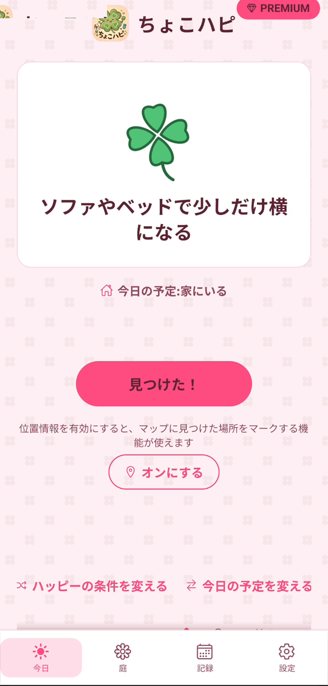
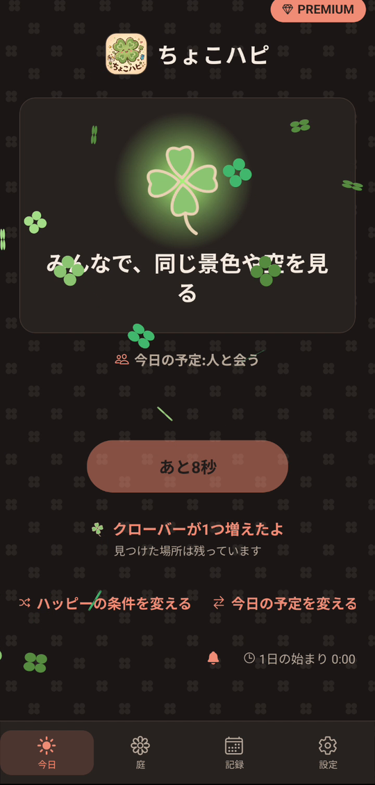

📖 はじめに（この画面でできること）
「今日」タブは、アプリを開いて最初に使うメイン画面です。その日の予定を選ぶと、予定に合わせた「ハッピー条件」がひとつ届きます。1日の中で条件のハッピーを見つけたら、「見つけた！」を押してクローバーを集めましょう。
🛠️ 詳しい操作手順
今日の予定を選ぶ
その日まだ予定を選んでいないときは、「今日の予定は？」と表示されます。次の4つから、今日の過ごし方にいちばん近いものを選んでください。
- 家にいる
- 外に出る
- 人と会う
- 人にあまり会わない
予定を選ぶと、その予定で見つけやすい「ハッピー条件」が自動で1つ決まります。条件は予定ごとに100種類あり、毎日違う条件が届きます。

ハッピー条件を確認してはじめる
予定を選ぶと、届いた条件の確認画面が表示されます。内容を確認して「この条件ではじめる」を押すと、その日のハッピー探しが始まります。
- 別の条件にする: 条件だけを引き直します。
- 予定を選び直す: 予定の選択画面に戻ります。

「見つけた！」で記録する
1日の中で条件のハッピーを見つけたら、大きな「見つけた！」ボタンを押します。クローバーが1つ増え、「クローバーが1つ増えたよ（今日◯個目）」と表示されます。記録には、見つけた時刻・その日の予定・条件が保存されます。
押した直後はボタンに「あと◯秒」と表示され、少し待つとまた押せるようになります（続けて押すための待ち時間です）。


条件・予定を変える
その日の途中で気が変わっても大丈夫です。条件表示の下にあるリンクから変更できます。
- ハッピーの条件を変える: 同じ予定のまま、条件だけを引き直します。
- 今日の予定を変える: 予定から選び直します。確認画面で「キャンセル（元の条件のまま）」を選べば、元の条件に戻れます。
引き直した条件は、前回と違うものが出る仕組みになっています。
クローバーの「しおれ」について
短時間にたくさん見つけすぎると、クローバーが疲れて少しずつしおれてしまうことがあります。しおれ具合によって、クローバーの見た目と一言メッセージ（「クローバーがしょんぼりしてきたよ」など）が変わり、しおれている間はクローバーが増えにくくなります。
少し時間を置くと、クローバーは元気に戻ります。慌てず、自分のペースで楽しんでください。
見つけた場所を残す
「見つけた場所を残す」をオンにすると、「見つけた！」を押した場所（位置情報）も記録に残せます。残した場所は「記録」タブで確認できます。
- 場所はこの端末の中だけに保存され、外部に送信されることはありません。
- 最初はオフです。設定タブの「場所」から切り替えるか、「今日」タブのボタン下の案内から「オンにする」を押します。
- 位置情報の許可がない場合や、端末の位置情報がオフの場合は残せません（画面に状態が表示されます）。